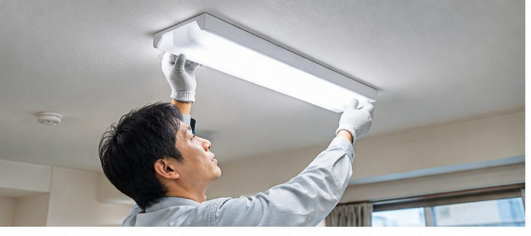
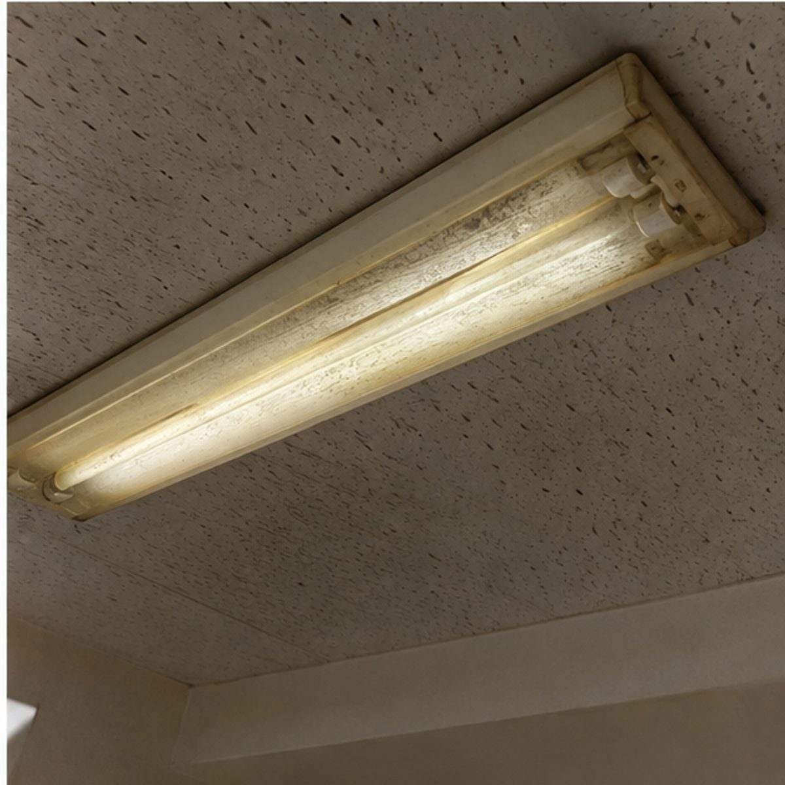
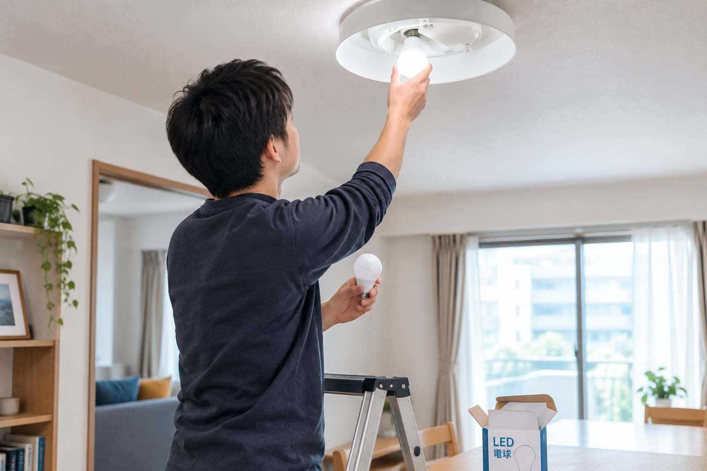

電気工事のお役立ちコラム
LED化・配線整理・補助金の活用など、個人宅・店舗・工場それぞれに役立つ情報を発信しています。

蛍光灯をLEDに交換する費用はいくら？工事費・器具代の目安を解説
電球・LED交換は3,000円/灯〜、照明器具交換は4,500円/台〜。個人宅・店舗・工場での費用の違いも解説します。
2026年9月22日
蛍光灯をLEDに交換する方法｜器具ごと交換とLEDランプ交換の違い
LEDランプだけ交換する方法と、照明器具ごと交換する方法の違い、それぞれが向いているケースを解説します。
2026年9月29日

LED照明に交換すると電気代はいくら安くなる？家庭・店舗で考えるポイント
蛍光灯との消費電力の違いから、電気代がどのくらい安くなるかを計算する方法を解説。家庭・店舗・工場で考え方が異なる理由もご紹介します。
2026年10月4日

古い蛍光灯をそのまま使い続けても大丈夫？LED化を考えるタイミング
交換を検討した方がいいサインをチェックリストで解説。蛍光灯の生産終了や、個人宅で使えるLED化の補助金についてもご紹介します。
2026年10月4日

文京区で蛍光灯をLEDに交換するには｜費用の目安と区の補助金
文京区内の中小企業が使える省エネ設備補助金（上限50万円・次回受付2026年12月8日）と、交換費用の目安を解説します。
2026年10月5日
現在、コラムを準備中です。近日公開いたします。